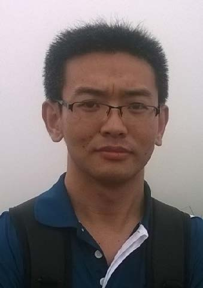

I am currently an associate professor at the College of Intelligence and Computing, Tianjin University. I received the Bachelor degree and the Master degree from Harbin Institute of Technology in 2011 and 2013. I received joint Ph.D. degrees from Harbin Institute of Technology and The Hong Kong Polytechnic University supervised by Prof. Wangmeng Zuo and Prof. David Zhang in 2018. My research interests include computer vision and deep learning.